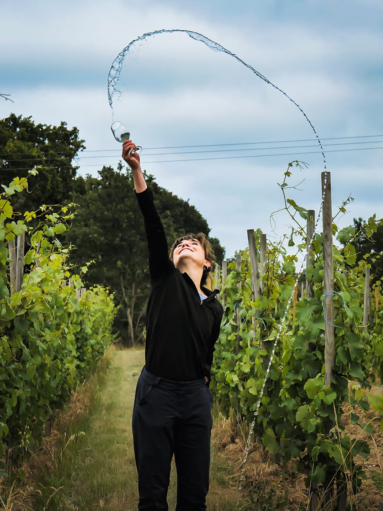
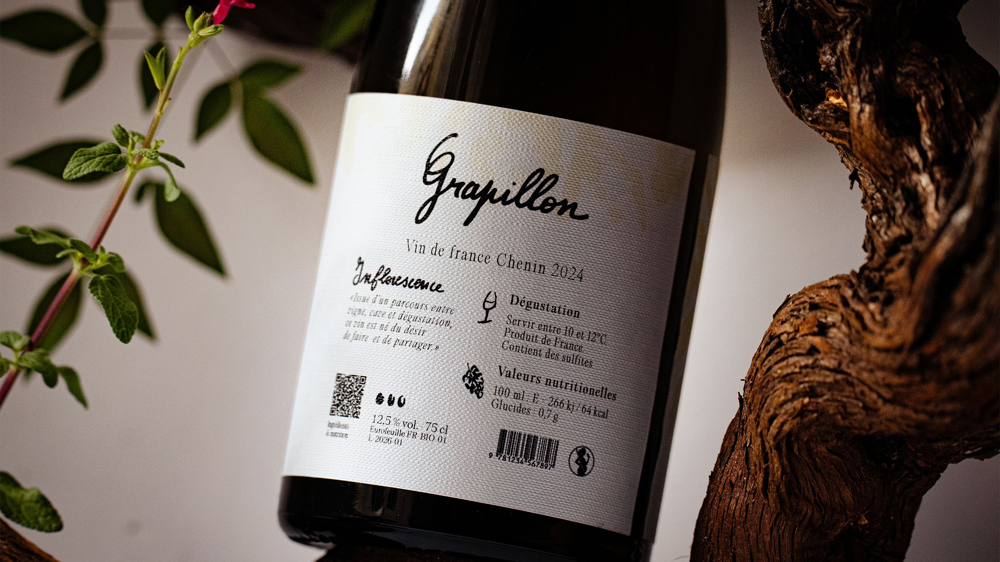
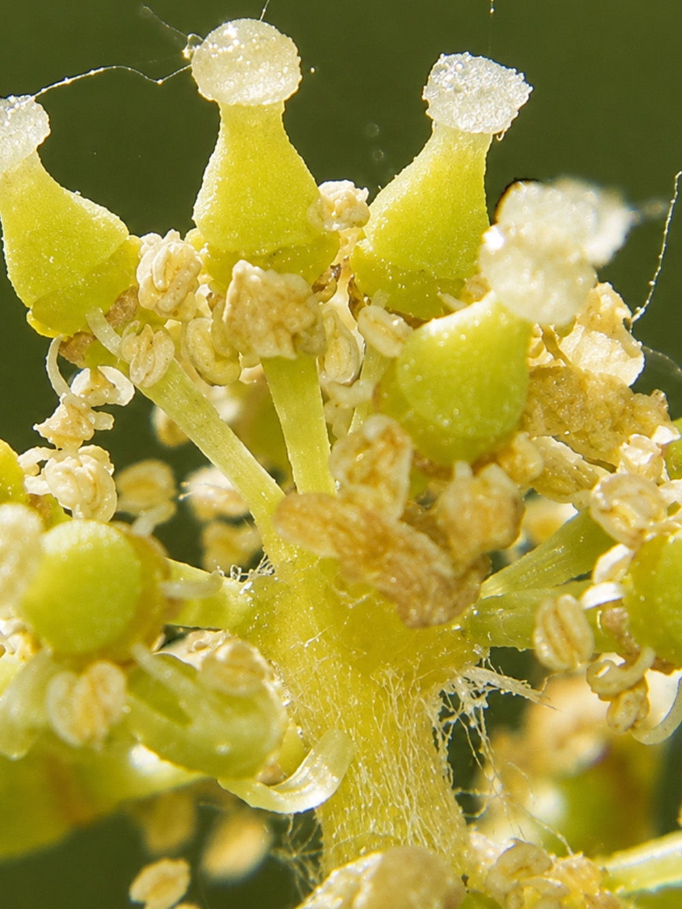

Fade — Motion Typography
Exploration en motion design autour de la typographie animée et de la disparition progressive de la forme.


Fade est un projet de motion typography explorant la dissolution progressive des formes typographiques. Le temps, ici, est le matériau principal : chaque lettre apparaît, existe brièvement, puis disparaît.
- Année
- 2025
- Client
- Projet personnel
- Services
- Motion design, Typographie, Direction artistique


L'animation
À compléter.


"À compléter."

Crédits
Direction artistique & motion
Jérémy Rambaud
Son
À compléter